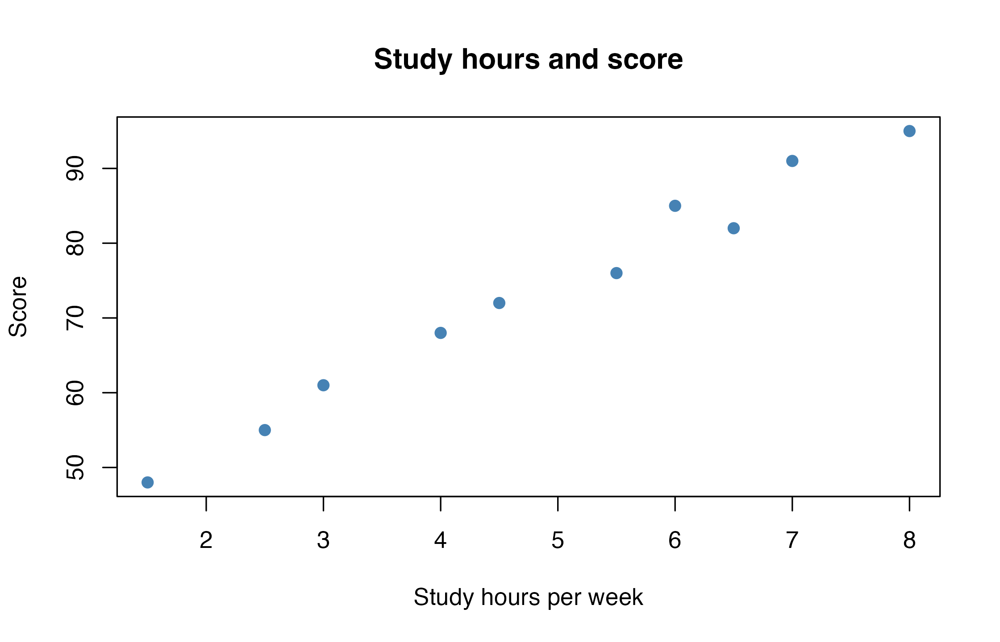
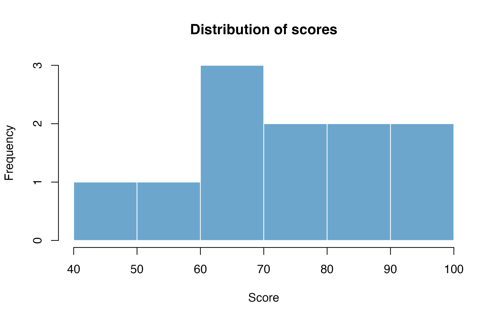
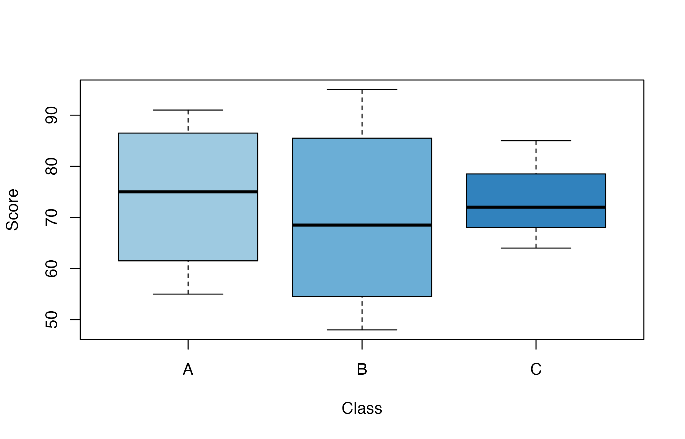
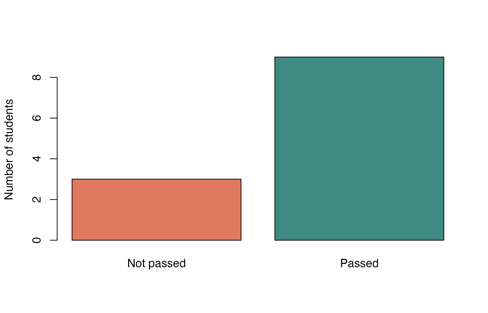
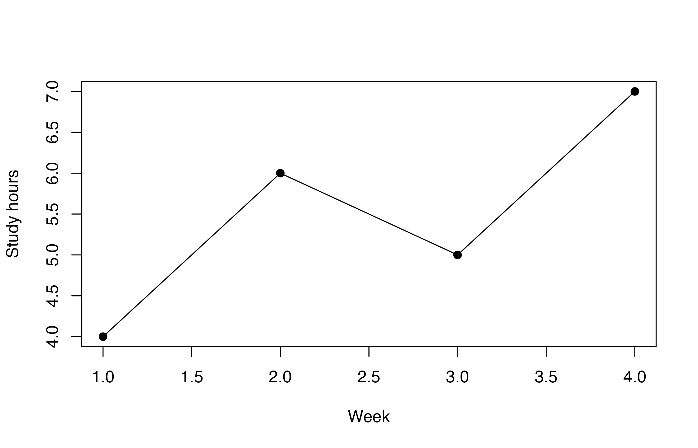

add_five <- function(x) {
result <- x + 5
return(result)
}第4回：Rの基本操作 IV ― 関数・CSV・パッケージ・作図
到達目標
- 複数の処理を関数にまとめ、引数と返り値を指定できる
- Projectを基準としたパスでCSVを読み込み、データの構造と欠損値を確認できる
- 外部パッケージのインストールと読み込みを区別できる
- Rの標準機能で図を作成し、ファイルに保存できる
Chapter 1｜関数を作成する
作業の準備
empirical_finance.Rprojを開く。- File → New File → R ScriptからRスクリプトを新規作成し、
script/lesson04.Rとして保存する。すでに作成している場合は、そのファイルを開く。 - Filesペインで、第2回に保存した
data/data_lesson02.csvがあることを確認する。結果の保存用に、Project直下にoutputフォルダを作成する。すでにある場合はそのまま使用する。
以下のコードはscript/lesson04.Rに順に記述し、実行して結果を確認する。前回のオブジェクトは自動復元されるが、ここで使うデータと関数は改めて作成する。パッケージの導入はChapter 3で扱う。
1. 計算式を関数にまとめる
第2回ではsqrt()やround()を使い、第3回ではベクトルの平均をmean()で求めた。Rでは、こうした既存の関数を利用するだけでなく、自分で処理を定義できる。
まず、得点に5点を加える関数を作成する。関数の定義にはfunction()を使う。
add_fiveは関数名、xは引数である。{ }の中に処理を記述し、return()で返り値を指定する。このコードを実行した段階では、関数が定義されるだけであり、具体的な得点の計算はまだ行われない。
定義した関数を呼び出すときに、引数に値を渡す。
add_five(72)[1] 77結果は77となる。同じ処理を別の値にも適用でき、処理を変更する場合も関数の定義を修正すればよい。
2. ベクトルを引数に渡す
次のベクトルを、この関数に渡してみよう。
scores <- c(72, 85, 91, 68, 77)
adjusted_scores <- add_five(scores)
adjusted_scores[1] 77 90 96 73 82scores[1] 72 85 91 68 77x + 5は各要素に対して計算されるため、5人分の結果がまとめて返る。返り値をadjusted_scoresに保存しても、元のscoresは変わらない。
補足：return()を省略する書き方
Rでは、関数内で最後に評価された値が返される。このため、次のように書くこともできる。
add_five_short <- function(x) {
x + 5
}
add_five_short(72)[1] 77練習：摂氏を華氏へ変換するcelsius_to_fahrenheit()を作成し、摂氏20度と30度を変換しなさい。変換式は\(F = 1.8C + 32\)とする。
解答例
celsius_to_fahrenheit <- function(celsius) {
1.8 * celsius + 32
}
celsius_to_fahrenheit(c(20, 30))結果は68度と86度である。
3. 複数の引数と既定値
第2回の総合点の計算を関数にする。小テストと期末テストの得点に加え、小テストの比重も引数として受け取る。
calculate_score <- function(quiz, exam, quiz_weight = 0.40) {
result <- quiz * quiz_weight + exam * (1 - quiz_weight)
return(result)
}
calculate_score(quiz = 78, exam = 92)[1] 86.4calculate_score(quiz = 78, exam = 92, quiz_weight = 0.50)[1] 85結果は順に86.4点と85点となる。quiz_weight = 0.40は既定値であり、呼び出し時に省略すると0.40が使われる。この例では、二つの比重の合計が1になるように記述している。
引数名を省略した場合は位置で対応する。引数名を記述すれば、順序を変えても対応は明確になる。
calculate_score(78, 92)[1] 86.4calculate_score(exam = 92, quiz = 78)[1] 86.4練習：小テスト70点、期末テスト90点について、小テストの比重を0.30として総合点を求めなさい。
解答例
calculate_score(quiz = 70, exam = 90, quiz_weight = 0.30)結果は84点である。
4. 条件に応じて処理を分ける
比較演算子は条件を満たすかどうかを論理値で返す。ifとelseを使うと、その結果によって実行する処理を分けられる。
judge_result <- function(score) {
if (score >= 60) {
return("合格")
} else {
return("不合格")
}
}
judge_result(82)[1] "合格"judge_result(48)[1] "不合格"条件がTRUEならif側、FALSEならelse側が実行される。この関数は、欠損していない一つの得点を受け取るものとする。ifの条件には、NAではない一つの論理値が必要である。
ベクトルの各要素について結果を返す場合は、ifelse()を使える。
ifelse(scores >= 80, "80点以上", "80点未満")[1] "80点未満" "80点以上" "80点以上" "80点未満" "80点未満"第1引数が条件、第2引数が条件を満たす場合の値、第3引数が満たさない場合の値である。
補足：関数内のオブジェクトとリストの返り値
関数内の代入は、通常、外側の同名のオブジェクトを書き換えない。必要な値を引数で受け取り、結果を返り値として取り出すように記述する。
center_scores <- function(x) {
average <- mean(x, na.rm = TRUE)
x - average
}
center_scores(scores)[1] -6.6 6.4 12.4 -10.6 -1.6複数の結果を返す場合は、第3回で学んだリストを使える。
describe_scores <- function(x) {
list(
n = sum(!is.na(x)),
average = mean(x, na.rm = TRUE)
)
}
score_summary <- describe_scores(scores)
score_summary$average[1] 78.6補足：for文による繰り返し
forはベクトルから値を順に取り出し、{ }内の処理を繰り返す。ここでは、欠損のない得点を一つずつ判定する。
for (one_score in scores) {
print(judge_result(one_score))
}[1] "合格"
[1] "合格"
[1] "合格"
[1] "合格"
[1] "合格"この処理では、judge_result()に渡る値は毎回一つである。ifelse()でベクトルを一度に処理する方法との違いを確認する。
Chapter 2｜CSVを読み込み、データを確認する
1. データファイルを準備する
第3回では、data.frame()に値を記述して表を作成した。観測数の多いデータを扱う場合は、ファイルから読み込む。CSVは、値をカンマで区切って表を保存するテキスト形式であり、通常は先頭行に列名が記載されている。
ここでは、第2回にLETUSからダウンロードし、Project内のdataフォルダに保存したdata_lesson02.csvを使用する。このファイルには、学生12人の学習時間や得点が記録されている。Filesペインでdataフォルダを開き、ファイルが保存されていることを確認する。
CSVの先頭部分は、次のようになっている。
student_id,class,study_hours,score,attendance,passed
S001,A,6.5,82,0.96,TRUE
S002,A,4.0,68,0.88,TRUE| 列名 | 内容 |
|---|---|
student_id |
学生ID |
class |
所属クラス |
study_hours |
1週間の学習時間（時間） |
score |
テストの得点 |
attendance |
出席率（0〜1） |
passed |
合否（TRUE / FALSE） |
結果は、作業の準備で作成したoutputフォルダに保存する。使用するファイルの位置は次のとおりである。
empirical_finance/
├── empirical_finance.Rproj
├── data/
│ └── data_lesson02.csv
├── script/
│ └── lesson04.R
└── output/2. Projectを基準にパスを指定する
empirical_finance.Rprojを開いた状態では、Projectフォルダが作業ディレクトリになる。したがって、CSVは"data/data_lesson02.csv"と指定する。script/lesson04.Rを編集していても、パスの基準はRスクリプトを置いたフォルダではない。
getwd()
list.files("data")getwd()は作業ディレクトリ、list.files()は指定したフォルダ内のファイル名を表示する。data_lesson02.csvが見つからない場合は、開いているProject、保存先、ファイル名を確認する。Posit：RStudio Projects
3. read.csv()で読み込む
read.csv()は、CSVをデータフレームとして読み込む関数である。追加パッケージを導入しなくても使用できる。
students <- read.csv(
"data/data_lesson02.csv",
na.strings = c("", "NA")
)
head(students) student_id class study_hours score attendance passed
1 S001 A 6.5 82 0.96 TRUE
2 S002 A 4.0 68 0.88 TRUE
3 S003 A 2.5 55 0.74 FALSE
4 S004 A 7.0 91 0.98 TRUE
5 S005 B 5.5 76 0.90 TRUE
6 S006 B 3.0 61 0.82 TRUE第1引数はファイルのパスである。na.stringsには、欠損値として読み込む表記を指定する。ここでは空欄とNAを欠損値として扱う。
ファイルをフォルダに置く操作と、Rのオブジェクトとして読み込む操作は異なる。読み込み後は、studentsを使ってデータを処理する。
4. 構造と欠損値を確認する
読み込んだ表にも、第3回で学んだ確認方法をそのまま使える。
class(students)[1] "data.frame"dim(students)[1] 12 6names(students)[1] "student_id" "class" "study_hours" "score" "attendance"
[6] "passed" str(students)'data.frame': 12 obs. of 6 variables:
$ student_id : chr "S001" "S002" "S003" "S004" ...
$ class : chr "A" "A" "A" "A" ...
$ study_hours: num 6.5 4 2.5 7 5.5 3 1.5 8 4.5 NA ...
$ score : int 82 68 55 91 76 61 48 95 72 64 ...
$ attendance : num 0.96 0.88 0.74 0.98 0.9 0.82 0.65 1 0.86 0.78 ...
$ passed : logi TRUE TRUE FALSE TRUE TRUE TRUE ...このデータは12行6列であり、1行が1人の学生を表す。数値として計算する列と、文字列や論理値として扱う列を確認する。
続いて欠損値を調べる。is.na()の結果は論理値であり、sum()ではTRUEが1、FALSEが0として数えられる。
sum(is.na(students$score))[1] 1colSums(is.na(students)) student_id class study_hours score attendance passed
0 0 1 1 0 0 colSums()は列ごとの合計を返す。得点と学習時間に、それぞれ1件の欠損値がある。
mean(students$score, na.rm = TRUE)[1] 72.45455この平均は、得点が記録されている学生だけを対象としている。
補足：文字化けや型の誤認がある場合
日本語が文字化けする場合は、配布ファイルの文字コードを確認する。UTF-8のファイルなら、次のように指定できる。
students <- read.csv("data/data_lesson02.csv", fileEncoding = "UTF-8")数値の列が文字列になっている場合は、数値以外の記号などが混ざっていないか確認する。型の変換だけで済ませず、元の表記と欠損値の扱いを確かめる。
5. 必要な行と列を取り出す
欠損値を除いたうえで、80点以上の学生についてIDと得点を取り出す。[行, 列]による指定は、手入力で作成したデータフレームと同じである。
high_scores <- students[
!is.na(students$score) & students$score >= 80,
c("student_id", "score")
]
high_scores student_id score
1 S001 82
4 S004 91
8 S008 95
12 S012 85練習：出席率が0.90以上の学生について、IDと出席率を取り出しなさい。
解答例
students[
students$attendance >= 0.90,
c("student_id", "attendance")
]処理結果を保存するには、write.csv()を使う。
write.csv(
high_scores,
"output/high-scores.csv",
row.names = FALSE
)row.names = FALSEは行番号を別の列として書き出さない指定である。元のCSVと区別できる名前で保存する。同名のファイルが既にある場合は上書きされるため、保存先を確認してから実行する。
Chapter 3｜外部パッケージを利用する
1. 機能を追加する
ここまで使ったread.csv()やmean()は、Rの標準的な機能として利用できる。パッケージは、関数、データ、説明文書などをまとめたものであり、追加することでRの機能を拡張できる。
例えば、データの読み込み、統計モデルの推定、図表の作成など、目的に応じた処理がパッケージとして提供されている。必要なパッケージを利用すれば、すべての処理を自分で一から記述する必要はない。ただし、関数に渡すデータや引数、返される結果の意味は、利用者が確認する必要がある。
Rの主要な配布サイトであるCRANには、24,908個のパッケージが掲載されている（2026年9月時点）。統計分析だけでなく、金融、医療、地理情報、文章の分析など、幅広い分野の機能が公開されている。CRAN：Contributed Packagesすべてのパッケージを導入する必要はなく、分析の目的に応じて必要なものを選び、利用すればよい。
金融・会計分野の特定の用途に向けて開発されたパッケージには、例えば次のようなものがある。
| パッケージ | 主な用途 |
|---|---|
| quantmod | 株価などの金融データの取得・分析 |
| PerformanceAnalytics | 投資の運用成果とリスクの評価 |
| PortfolioAnalytics | ポートフォリオの分析・最適化 |
| edgarWebR | 米国SECに提出された企業の開示書類情報の取得・解析 |
この回で使用するパッケージ
ここではCSVの読み込みにreadrを使う。readrはtidyverseを構成するパッケージの一つであり、単独でも導入できる。複数の関数をパイプでつなぐデータ処理は第6回で扱う。作図にはRの標準機能を用いる。
2. インストールと読み込みを区別する
パッケージは、まずパソコンにインストールする。以下は未導入の場合にConsoleで実行する。
install.packages("readr")すでにインストール済みであれば、ここは省略する。続いて、現在のRセッションで使えるようにlibrary()で読み込む。以下の行はscript/lesson04.Rに記述する。
library(readr)| 操作 | 関数 | 実行する時期 |
|---|---|---|
| 導入 | install.packages() |
未導入のとき、または更新・再導入が必要なとき |
| 読み込み | library() |
新しいRセッションで、そのパッケージを使うとき |
Projectのオブジェクトが自動復元されても、使用するパッケージの読み込みはRスクリプトに記述しておく。Projectを開き直した後にパッケージの関数を使う場合は、該当するlibrary()の行を実行する。毎回の作業でインストールからやり直す必要はない。
補足：導入状況とバージョンを確認する
requireNamespace("readr", quietly = TRUE)
packageVersion("readr")[1] '2.1.5'最初の結果がTRUEなら、readrを利用できる。関数の説明は?readr::read_csvなどで確認できる。
3. readrで同じCSVを読む
同じファイルをread_csv()で読み込み、先ほどのstudentsと比較する。
students_readr <- read_csv(
"data/data_lesson02.csv",
na = c("", "NA"),
show_col_types = FALSE
)
class(students_readr)
head(students_readr)[1] "spec_tbl_df" "tbl_df" "tbl" "data.frame" # A tibble: 6 × 6
student_id class study_hours score attendance passed
<chr> <chr> <dbl> <dbl> <dbl> <lgl>
1 S001 A 6.5 82 0.96 TRUE
2 S002 A 4 68 0.88 TRUE
3 S003 A 2.5 55 0.74 FALSE
4 S004 A 7 91 0.98 TRUE
5 S005 B 5.5 76 0.9 TRUE
6 S006 B 3 61 0.82 TRUE read_csv()は、データフレームを拡張したtibbleを返す。show_col_types = FALSEは、読み込み時の列型の案内を非表示にする設定であり、データの型そのものを変更するものではない。readr：read_csv()
dim(students_readr)[1] 12 6mean(students_readr$score, na.rm = TRUE)[1] 72.45455行数・列数と平均点が、read.csv()で読み込んだ結果と一致することを確認する。以降の例では、引き続きstudentsを使う。
4. パッケージ名を明示する
パッケージ名::関数名と書くと、関数の所属を明示できる。パッケージがインストール済みであれば、library()を実行する前でも、その関数を呼び出せる。
readr::read_csv("data/data_lesson02.csv", show_col_types = FALSE)::はインストールの代わりにはならない。未導入のパッケージは、先にinstall.packages()で導入する。
確認：すでにreadrをインストールしたパソコンで、Projectを開き直してread_csv()を使う。通常、どの操作を行えばよいか。
解答例
library(readr)を実行する。再インストールは不要である。readr::read_csv()のように所属を明示して呼び出す方法もある。
補足：readrでCSVを書き出す
readr::write_csv(high_scores, "output/high-scores-readr.csv")write_csv()は行名を書き出さないため、row.names = FALSEの指定は不要である。
Chapter 4｜グラフを作成し、保存する
1. 確認したい内容とグラフの種類
データの構造を確認したら、分布や変数間の関係を図で確かめる。ここでは、同じ学生データを使い、Rの標準機能で作図する。追加のパッケージは必要ない。
| 確認したいこと | グラフ |
|---|---|
| 学習時間と得点の関係 | 散布図 |
| 得点の分布 | ヒストグラム |
| クラスごとの得点の分布 | 箱ひげ図 |
| 合否別の人数 | 棒グラフ |
2. 散布図を作成する
学習時間を横軸、得点を縦軸に置く。二つの値がそろっている学生だけを対象とするため、第3回で学んだ条件抽出を使う。
plot_data <- students[
!is.na(students$study_hours) & !is.na(students$score),
]
nrow(plot_data)[1] 10対象は10人である。plot()に横軸と縦軸のベクトルを渡して描く。
plot(
x = plot_data$study_hours,
y = plot_data$score,
xlab = "Study hours per week",
ylab = "Score",
main = "Study hours and score",
pch = 19,
col = "steelblue"
)
xlabとylabは軸名、mainはタイトル、pchは点の形、colは色を指定する。RStudioでは図がPlotsペインに表示される。
このデータでは、学習時間が長い学生ほど得点も高い傾向が見られる。ただし、この図だけから学習時間が得点の差を生んだと断定することはできない。
補足：基準線と文字を追加する
abline()とtext()は、作成済みの図に線や文字を追加する。次のコードを、上のplot()を実行した直後に実行する。
abline(h = 80, lty = 2, col = "grey50")
text(x = 2, y = 83, labels = "Score = 80")hは水平線の高さ、lty = 2は破線の指定である。
練習：上の散布図の点を濃い緑色に変更し、タイトルを"Weekly study hours and score"にしなさい。
解答例
plot()のcolを"darkgreen"、mainを"Weekly study hours and score"に変更して再実行する。
3. ヒストグラムを作成する
hist()は、数値を区間に分け、各区間に含まれる件数を表示する。得点の分布には、学習時間の欠損は関係しないため、得点が記録されている11人を使用する。
score_values <- students$score[!is.na(students$score)]
length(score_values)[1] 11hist(
score_values,
breaks = seq(40, 100, by = 10),
col = "skyblue3",
border = "white",
xlab = "Score",
main = "Distribution of scores"
)
breaksに区切りを指定すると、この例では40から100までを10点幅に分けられる。区間の幅によって分布の見え方が変わるため、図を読む際は区切りも確認する。
補足：箱ひげ図・棒グラフ・折れ線グラフ
boxplot()は中央値や散らばりを示し、クラスごとの分布の比較に使える。score ~ classは、得点をクラスで分けるという指定である。
boxplot(
score ~ class,
data = students,
xlab = "Class",
ylab = "Score",
col = c("#9ecae1", "#6baed6", "#3182bd")
)
table()でカテゴリごとの人数を数え、barplot()で棒グラフにできる。
pass_counts <- table(students$passed)
barplot(
pass_counts,
names.arg = c("Not passed", "Passed"),
col = c("#e07a5f", "#3d8b82"),
ylab = "Number of students"
)
時間の順序に意味があるデータでは、折れ線グラフを使える。type = "o"は点と線を重ねる指定である。
weeks <- 1:4
weekly_hours <- c(4, 6, 5, 7)
plot(
weeks, weekly_hours,
type = "o",
xlab = "Week",
ylab = "Study hours",
pch = 19
)
学生IDのように順序自体に意味がない値を、同じように線で結ぶ必要はない。
4. 図を保存する
Chapter 2で作成したoutputフォルダに、散布図をPNG形式で保存する。png()で保存先を指定し、作図のコードを実行した後、dev.off()でファイルへの出力を終了する。
png("output/study-score.png", width = 1120, height = 720, res = 160)
plot(
x = plot_data$study_hours,
y = plot_data$score,
xlab = "Study hours per week",
ylab = "Score",
main = "Study hours and score",
pch = 19,
col = "steelblue"
)
dev.off()widthとheightは画像の幅と高さ（ピクセル）、resは解像度を指定する。png()は、すでにPlotsペインに表示された図を保存する関数ではない。png()からdev.off()までを順に実行し、その間に図を描く必要がある。
同名のファイルがある場合は上書きされる。保存後はFilesペインでoutputを開き、画像を確認する。
練習：同じ手順で得点のヒストグラムをoutput/score-histogram.pngに保存しなさい。
解答例
png("output/score-histogram.png", width = 1120, height = 720, res = 160)
hist(
score_values,
breaks = seq(40, 100, by = 10),
col = "skyblue3",
border = "white",
xlab = "Score",
main = "Distribution of scores"
)
dev.off()作業を終えるときは、Rスクリプトを保存してProjectを閉じる。